Appendix Age Acceleration, Padlocks
Parameters
## {
## "host": "C02ZG04PM0XV",
## "nPerm": 40,
## "workers": 41,
## "outliers": {
## "thresholdSD": 3,
## "noOfPCs": 2,
## "removeOutliers": true,
## "shape": "Diagnosis",
## "perCohort": true
## },
## "clustering": {
## "groups": ["Sex", "Batch", "substr(ID, 1, 1)"],
## "addClustersToModel": 0
## },
## "normalization": {
## "normalize": true,
## "plotColor": "Batch"
## },
## "imputation": {
## "imputeBetas": false,
## "imputeCounts": false
## },
## "model": {
## "formula": "~ 0 + Diagnosis + Diagnosis:Age + Cohort + Sex + PMI",
## "formula0": "~ 0 + Diagnosis + Age + Cohort + Sex + PMI",
## "contrasts": ["DiagnosisControl.Age", "DiagnosisPD.LBD.Age"],
## "svRange": [1, 2, 3, 4, 5, 6]
## }
## }Data
Combined together all appendix samples
Resulting data structure:
## beta counts countsU countsM genome sample modelData
## [1,] 185400 185400 185400 185400 185400 77 77
## [2,] 77 77 77 77 6 7 5Analysis
Outlier identification
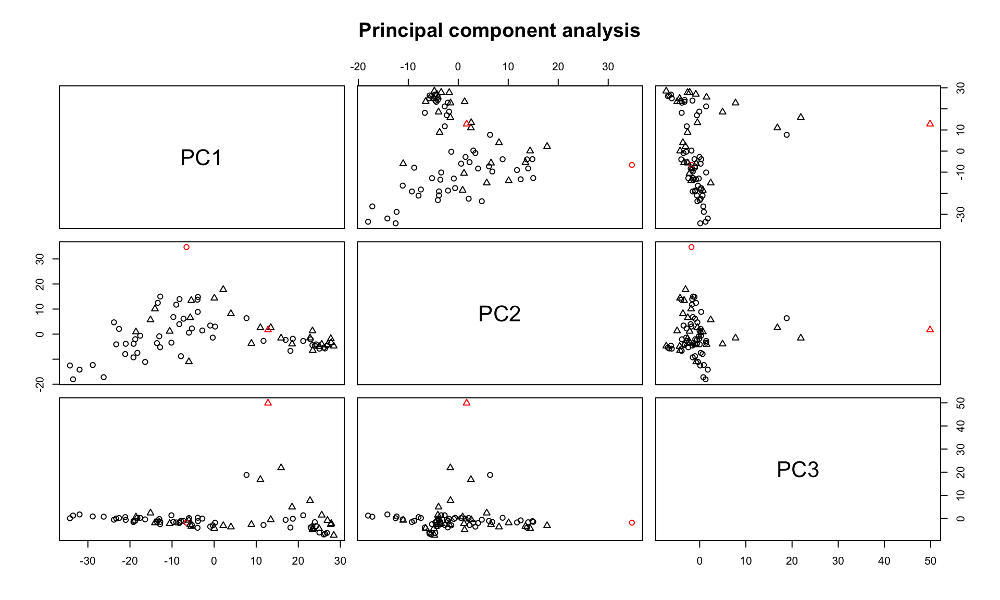
| ID | Diagnosis | Age | Sex | PMI | Batch | Cohort |
|---|---|---|---|---|---|---|
| E1 | Control | 77 | M | 0.45 | 0 | Aging |
| X3616 | PD/LBD | 87 | M | 18.00 | 2 | PD |
Outliers have been removed.
[1] “untouched tables: genome”
Sample clustering
Hierarchical clustering using correlations as similarity measure and Ward linkage.

Normalization
Signal density before normalization
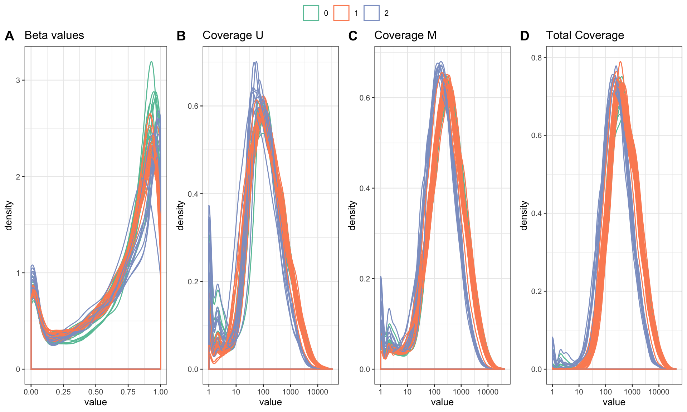
U and M matrices were quantile normalized separately, total counts and beta values were obtained from normalized matrices.
Signals after normalization
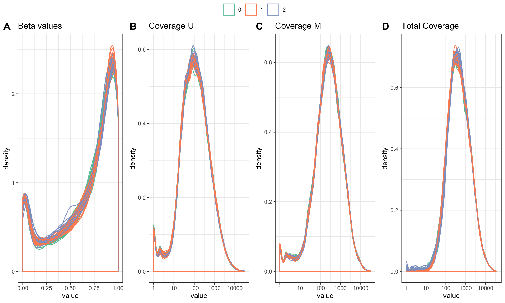PCA and outliers after normalization
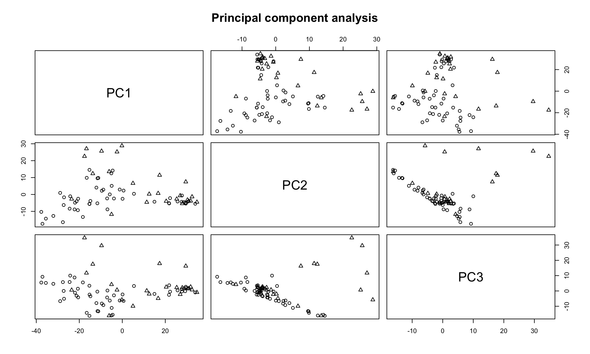
Covariates
Covariates used in subsequent models
## [1] "Age" "Sex" "PMI" "Diagnosis" "Cohort"Are any of the covariates related to the variable of interest? (Assuming that the first variable in modelData is the one of interest).
##
## Call:
## glm(formula = formula, data = data$modelData)
##
## Deviance Residuals:
## Min 1Q Median 3Q Max
## -38.059 -7.747 0.780 9.109 24.212
##
## Coefficients:
## Estimate Std. Error t value Pr(>|t|)
## (Intercept) 58.81305 3.11547 18.878 <2e-16 ***
## SexF -2.73216 3.54267 -0.771 0.4432
## PMI -0.02973 0.20635 -0.144 0.8859
## DiagnosisPD/LBD 7.97708 4.77356 1.671 0.0992 .
## Cohort1 13.79746 5.51749 2.501 0.0148 *
## Cohort2 15.19058 6.96096 2.182 0.0325 *
## ---
## Signif. codes: 0 '***' 0.001 '**' 0.01 '*' 0.05 '.' 0.1 ' ' 1
##
## (Dispersion parameter for gaussian family taken to be 221.8034)
##
## Null deviance: 22419 on 74 degrees of freedom
## Residual deviance: 15304 on 69 degrees of freedom
## AIC: 625.72
##
## Number of Fisher Scoring iterations: 2Robust lmFit v2
50% stable, non extreme change, M values, robust limma eBayes
methylation <- data$beta
prefix <- "m6_"
modelparams <- list(
allowStable = 0.5,
useMvalues = TRUE,
fixInfinity = 0.001, # Fraction of change for 0% and 100% methylated locations
downloadDataMatrix = TRUE,
accelerationVariable = "Diagnosis" # Name of variable to test differential acceleration
)Removal of non-informative loci
Fraction of CGs that should be removed depending on threshold. Currently set threshold is 50%
Removing 4249 stable loci.
Conversion of Beta values to M values
Beta values were converted to M values.
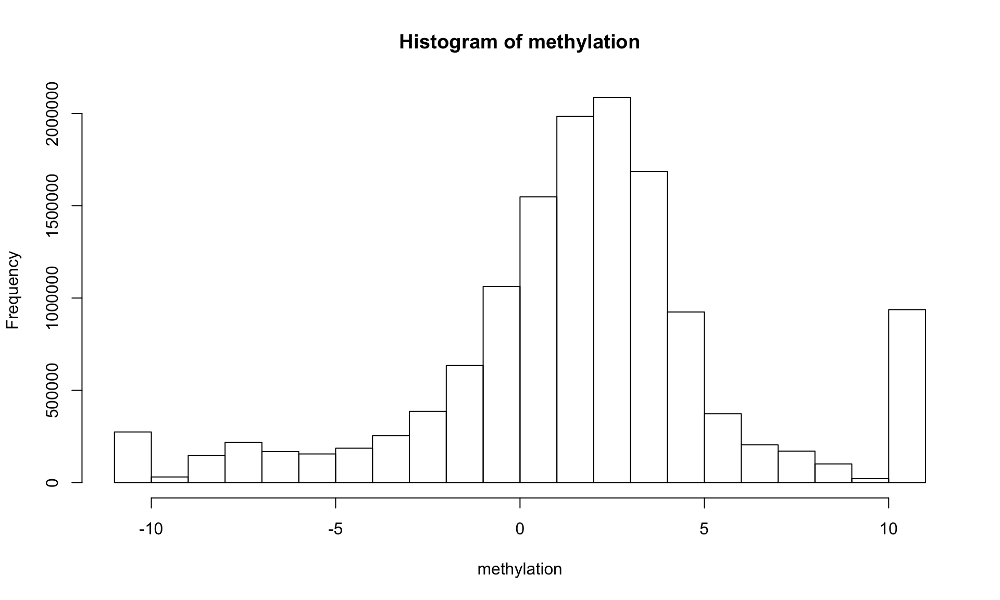
Data download
Data PCs vs Covariates
Fit covariates to the PCs using limma
## Removing intercept from test coefficients| Age | SexF | PMI | DiagnosisPD.LBD | Cohort1 | Cohort2 | AveExpr | F | P.Value | adj.P.Val | |
|---|---|---|---|---|---|---|---|---|---|---|
| PC2 | -0.1039909 | -8.4068769 | 0.8573093 | -49.622599 | 1.881541 | -180.803231 | 0 | 28.7962534 | 0.0000000 | 0.0000000 |
| PC1 | 1.4054156 | -12.5510868 | 2.8543855 | 41.301081 | 67.783059 | -47.599903 | 0 | 6.7168283 | 0.0000096 | 0.0000480 |
| PC3 | 1.3295081 | -7.6836794 | -1.3073497 | -22.379140 | 32.802034 | -10.906930 | 0 | 1.9814404 | 0.0785560 | 0.2618534 |
| PC7 | 0.3710669 | 29.0310551 | 1.0351822 | -7.540886 | -15.772934 | 1.979755 | 0 | 1.2540060 | 0.2886930 | 0.6158646 |
| PC9 | -0.5537953 | -15.9334120 | -0.1339604 | 1.377232 | 16.050137 | 51.720257 | 0 | 1.2148259 | 0.3079323 | 0.6158646 |
| PC10 | 0.4113075 | -0.7170407 | -0.7626552 | 2.720919 | 18.004121 | -18.364818 | 0 | 0.8027938 | 0.5707886 | 0.9385228 |
| PC4 | -0.0612320 | -0.4549554 | 0.5964035 | 1.802803 | -24.061844 | -52.197111 | 0 | 0.6539184 | 0.6868292 | 0.9385228 |
| PC6 | -0.4495926 | 11.4854057 | 0.5749265 | 4.940078 | -12.083381 | 12.789843 | 0 | 0.5616686 | 0.7594608 | 0.9385228 |
| PC8 | -0.0199469 | 12.8760727 | -0.5316641 | 6.844144 | -5.979546 | -13.795932 | 0 | 0.4474110 | 0.8446705 | 0.9385228 |
| PC5 | 0.2398807 | 9.8571820 | -0.1324579 | 0.732610 | -2.656854 | 6.694785 | 0 | 0.1555765 | 0.9873742 | 0.9873742 |
The covariates significantly affecting the PCs using ANOVA:
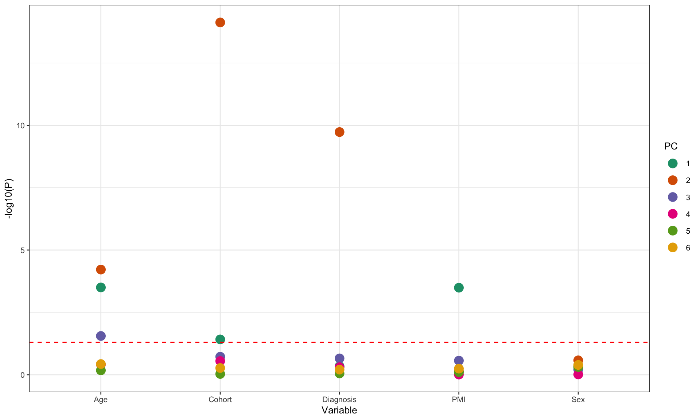
Select the number of SVs
All known covariates are regressed from data and PCA of residuals is computed. The number of PCs that explain more than 5% of variability is used as the desired number of SVs.
## Selected number of SVs 0Probe-level models
P value distribution
## Warning: Removed 30 rows containing non-finite values (stat_bin).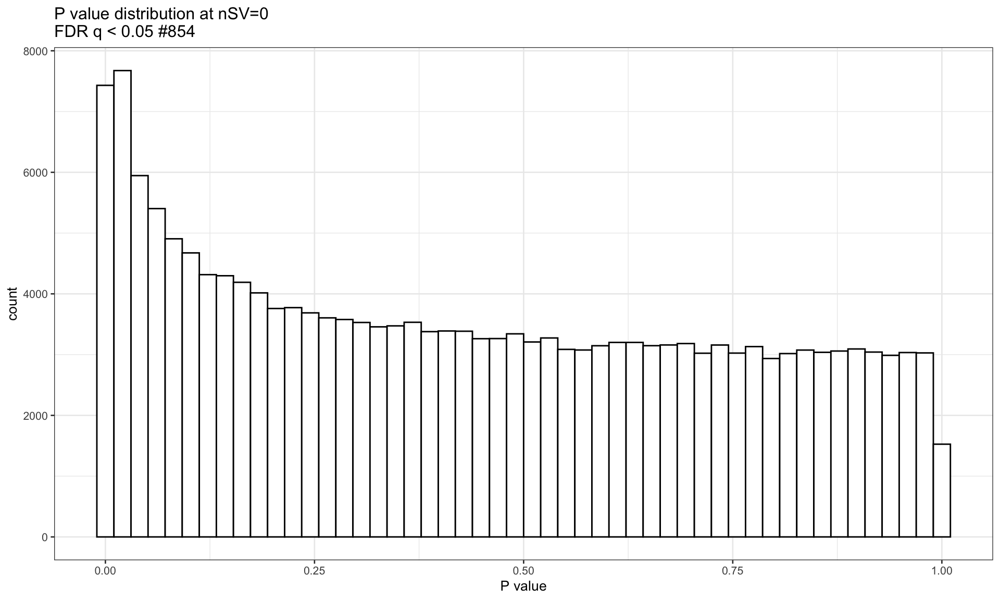
Volcano plot
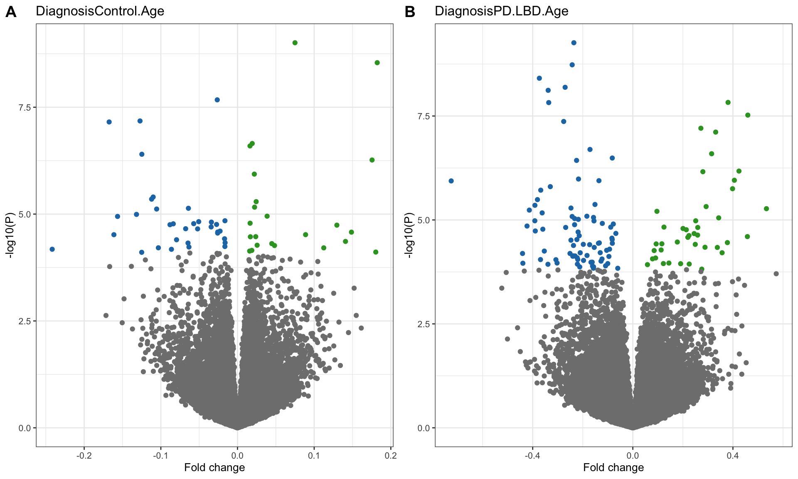
Manhattan plot
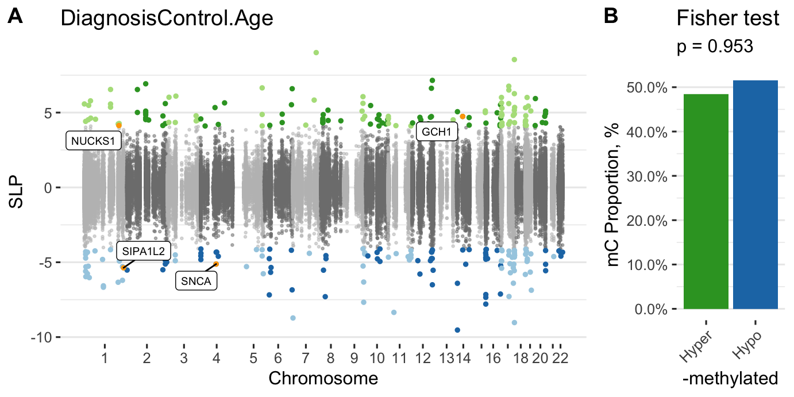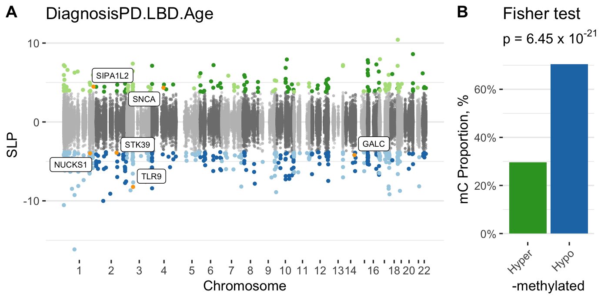
Download
Age acceleration
An age predictor is trained and evaluated using 10 fold cross-validation on all the samples. Random forest is used as training algorithm.
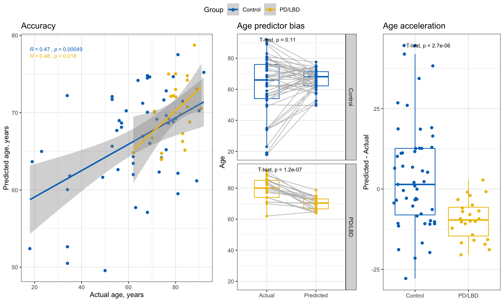
SessionInfo
## R version 3.6.1 (2019-07-05)
## Platform: x86_64-apple-darwin13.4.0 (64-bit)
## Running under: macOS Mojave 10.14.6
##
## Matrix products: default
## BLAS/LAPACK: /opt/anaconda3/envs/ALP/lib/libopenblasp-r0.3.7.dylib
##
## locale:
## [1] en_US.UTF-8/en_US.UTF-8/en_US.UTF-8/C/en_US.UTF-8/en_US.UTF-8
##
## attached base packages:
## [1] parallel stats graphics grDevices utils datasets methods
## [8] base
##
## other attached packages:
## [1] ggsci_2.9 randomForest_4.6-14 caret_6.0-84
## [4] lattice_0.20-38 latex2exp_0.4.0 doSNOW_1.0.18
## [7] snow_0.4-3 itertools_0.1-3 iterators_1.0.12
## [10] limma_3.42.0 impute_1.60.0 WGCNA_1.68
## [13] fastcluster_1.1.25 dynamicTreeCut_1.63-1 glue_1.3.1
## [16] foreach_1.4.7 ggpubr_0.2.4 magrittr_1.5
## [19] plotly_4.9.1 ggplot2_3.2.1 dplyr_0.8.3
## [22] data.table_1.12.8 kableExtra_1.1.0 knitr_1.26
## [25] shiny_1.4.0
##
## loaded via a namespace (and not attached):
## [1] colorspace_1.4-1 ggsignif_0.6.0 ellipsis_0.3.0
## [4] class_7.3-15 htmlTable_1.13.3 base64enc_0.1-3
## [7] rstudioapi_0.10 farver_2.0.1 ggrepel_0.8.1
## [10] bit64_0.9-7 lubridate_1.7.4 prodlim_2019.11.13
## [13] AnnotationDbi_1.48.0 mvtnorm_1.0-11 xml2_1.2.2
## [16] codetools_0.2-16 splines_3.6.1 doParallel_1.0.15
## [19] robustbase_0.93-5 zeallot_0.1.0 Formula_1.2-3
## [22] jsonlite_1.6 cluster_2.1.0 GO.db_3.10.0
## [25] rrcov_1.4-7 readr_1.3.1 compiler_3.6.1
## [28] httr_1.4.1 backports_1.1.5 assertthat_0.2.1
## [31] Matrix_1.2-17 fastmap_1.0.1 lazyeval_0.2.2
## [34] later_1.0.0 acepack_1.4.1 htmltools_0.4.0
## [37] tools_3.6.1 gtable_0.3.0 reshape2_1.4.3
## [40] Rcpp_1.0.3 Biobase_2.46.0 vctrs_0.2.1
## [43] nlme_3.1-141 preprocessCore_1.48.0 timeDate_3043.102
## [46] gower_0.2.1 xfun_0.11 stringr_1.4.0
## [49] rvest_0.3.5 mime_0.8 lifecycle_0.1.0
## [52] DEoptimR_1.0-8 MASS_7.3-51.4 scales_1.1.0
## [55] ipred_0.9-9 hms_0.5.2 promises_1.1.0
## [58] RColorBrewer_1.1-2 yaml_2.2.0 memoise_1.1.0
## [61] gridExtra_2.3 rpart_4.1-15 latticeExtra_0.6-28
## [64] stringi_1.4.3 RSQLite_2.1.5 highr_0.8
## [67] S4Vectors_0.24.0 pcaPP_1.9-73 checkmate_1.9.4
## [70] BiocGenerics_0.32.0 lava_1.6.6 rlang_0.4.2
## [73] pkgconfig_2.0.3 matrixStats_0.55.0 evaluate_0.14
## [76] purrr_0.3.3 recipes_0.1.8 htmlwidgets_1.5.1
## [79] labeling_0.3 cowplot_1.0.0 bit_1.1-14
## [82] tidyselect_0.2.5 robust_0.4-18.1 plyr_1.8.5
## [85] R6_2.4.1 generics_0.0.2 IRanges_2.20.0
## [88] Hmisc_4.2-0 fit.models_0.5-14 DBI_1.1.0
## [91] pillar_1.4.3 foreign_0.8-72 withr_2.1.2
## [94] survival_2.44-1.1 nnet_7.3-12 tibble_2.1.3
## [97] crayon_1.3.4 rmarkdown_1.18 grid_3.6.1
## [100] blob_1.2.0 ModelMetrics_1.2.2 digest_0.6.23
## [103] webshot_0.5.2 xtable_1.8-4 tidyr_1.0.0
## [106] httpuv_1.5.2 stats4_3.6.1 munsell_0.5.0
## [109] viridisLite_0.3.0